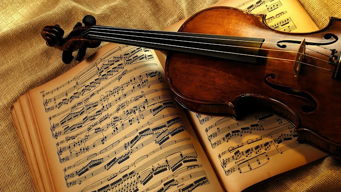

РОК
Рок-музика — узагальнена назва низки напрямків популярної музики другої половини XX століття, що походять від рок-н-ролу та ритм-енд-блюзу. Термін Rock очевидно є скороченням від Rock'n'roll і дослівно перекладається як «хитати(ся); трясти(ся)». Рок-музика має велику кількість напрямків: від танцювального рок-н-ролу до важкого металу. Зміст пісень варіюється від легкого і невимушеного до похмурого, глибокого і філософського.
КЛАСИЧНА
Класи́чна му́зика — неоднозначне поняття, яке вживається, залежно від контексту, в трьох значеннях: У значенні якісної оцінки (лат. classicus — зразковий): музика минулого, що витримала випробування часом та має аудиторію в сучасному суспільстві. Уже сьогодні як класичні сприймаються не тільки перлини «високого» музичного мистецтва, але й найкращі взірці розважальних жанрів минулого: наприклад, вершини французької та віденської оперети XIX — початку XX ст.

Хіп-Хоп
Хіп-хоп [1] (англ. hip-hop music) — музичний напрям, сформуваний у Сполучених Штатах в 1970-ті роки в середовищі вихідців з Африки та Латинської Америки. Складається зі стилізованої ритмічної музики, яка зазвичай супроводжується репом — ритмічною та римованою співаною мовою. Музика є частиною субкультури, помітними чотирма елементами якої є реп, техніка скретчінгу, брейкданс і графіті.
ДЖАЗ
Джаз (англ. jazz) — вид музичного мистецтва, що виник на межі XIX—XX століття в США серед пригнобленого, безправного афроамериканського населення, серед нащадків рабів, насильно вивезених зі своєї батьківщини[1] та отримав згодом певне поширення.